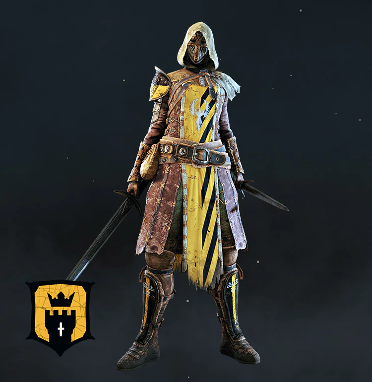

Les Chevaliers d'Ashfeld
La Sentinelle
- Gardien
- Difficulté : facile
- Polyvalent
 Le Fléau
Le Fléau
- Tank
- Difficulté : moyenne
- Style de combat défensif
- Posture totale
- Attaques lourdes imblocables

La Spadassin
- Assassin
- Difficulté : moyenne
- Déplacement apide
- Attaque à courte porté rapide
- Style de combat à base de contre-attaque
 L'Emissaire
L'Emissaire
- Hybride
- Difficulté : moyenne
- Polyvalent
- Spécialiste des parades
- Attaques assomantes
Les Vikings de Valkenheim
Le Hersir
- Gardien
- Difficulé : facile
- Polyvalent
- Attaques puissantes
Le Jarl
- Tank
- Difficulté : moyenne
- Style de combat basé sur la contre-attaque
- Posture totale
- Attaques ininterruptibles
Le Berserker
- Assassin
- Difficulté : moyenne
- Courte portée
- Peut enchainer les coups indéfiniment
- Attaques ininterruptibles
La Valkyrie
- Hybride
- Difficulté : moyenne
- Polyvalent
- Combos complexes
Les Samouraïs du Bourbier
 Le Kensei
Le Kensei
- Gardien
- Difficulté : facile
- Polyvalent
- Attaques ayant une bonne allonge
Le Shugoki
- Tank
- Difficulté : facile
- Attaques puissantes ininterruptible
- Très résistant
L'Orochi
- Assassin
- Difficulté : difficile
- Attaques rapides
La Nobushi
- Hybride
- Difficulté : difficile
- Posture totale spéciale
- Attaques ayant une bonne allonge
- Spécialiste des attaques de saignement